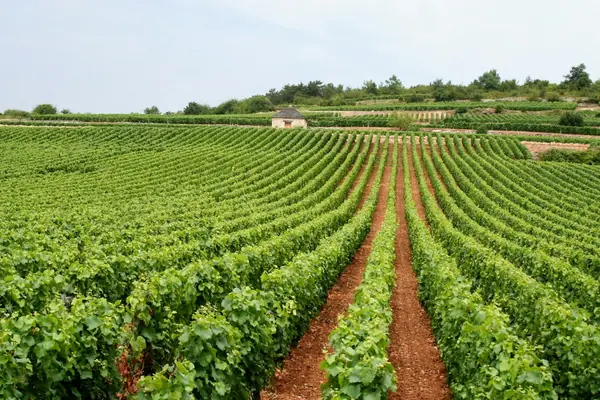

Home › Wine regions › Provence
Provence wine region

Photo: Gwyn Hay on Unsplash
Pale, dry rosé.
The benchmark for many wine styles, organised by appellation (AOC).
Climate and soil
Hot, sunny Mediterranean climate with cooling coastal influence.
Key areas and appellations
Côtes de Provence, Coteaux d'Aix, Bandol
Good to know
Pale dry rosé dominates. Bandol is the exception, known for powerful Mourvèdre reds.
The grapes of Provence
- Garnacha / Grenache (red): strawberry, cherry, spice. Best known in Spain, Rhône, Sardinia.
- Cinsault (red): red cherry, strawberry, floral. Best known in Languedoc, South Africa.
- Mourvèdre (red): blackberry, plum, pepper, earth. Best known in Bandol, Spain.
Notable producers in Provence
- Domaine Tempier
- Château d'Esclans
- Château Minuty
- Domaines Ott
- Château Simone
Official appellations
| Appellation | Status | Style | Grapes |
|---|---|---|---|
| Bandol (1941) Coastal appellation of 8 communes around the port of Bandol. Reds need at least 50% Mourvèdre and 18 months in oak; rosés at least 20% Mourvèdre. | AOC | Red, Rosé, White | Mourvèdre, Garnacha / Grenache, Cinsault |
Provence wines to try
Château d'Esclans Whispering Angel
Provence · Côtes de Provence · Grenache Rosé, Cinsault
Pale and dry: strawberry, peach and a crisp finish.
Food: Salads, grilled prawns
Château La Gordonne Côtes de Provence Rosé
Provence · Côtes de Provence · Grenache, Cinsault, Syrah
Pale, dry Provence rosé: peach, citrus and a saline finish.
Food: Salade niçoise, grilled prawns
Château Minuty Rose et Or
Provence · Côtes de Provence · Grenache, Cinsault
Very pale, refined rosé with citrus, white peach and fresh minerality.
Food: Seafood, sushi
Château Minuty 281 Rosé
Provence · Côtes de Provence · Grenache, Syrah
Minuty's top rosé: concentrated, textured and elegantly dry.
Food: Lobster, sea bass
Clos Cibonne Tibouren Tradition
Provence · Côtes de Provence · Tibouren, Grenache
Rare Tibouren rosé aged under fleurette: savoury, herbal and textured.
Food: Bouillabaisse, grilled fish
Château d'Esclans Garrus
Provence · Côtes de Provence · Grenache, Rolle
Barrel-fermented old-vine rosé: rich, creamy and complex.
Food: Lobster, roast chicken
Domaines Ott Château Romassan Bandol Rosé
Provence · Bandol · Mourvèdre, Grenache, Cinsault
Structured Bandol rosé with stone fruit, spice and a long finish.
Food: Grilled fish, lamb
Domaines Ott Clos Mireille Rosé
Provence · Côtes de Provence · Grenache, Cinsault, Syrah
Seaside Provence rosé: delicate, saline and fresh.
Food: Seafood platter
Château Minuty Blanc et Or
Provence · Côtes de Provence · Rolle (Vermentino)
Fine Provence white: citrus, white flowers and saline freshness.
Food: Seafood, sea bass
Château Minuty Rouge et Or
Provence · Côtes de Provence · Syrah, Grenache
Provence red: ripe fruit and herbs.
Food: Lamb, ratatouille
Domaines Ott Château Romassan Bandol Rouge
Provence · Bandol · Mourvèdre, Grenache
Mourvèdre-based Bandol: dark fruit, leather and herbs.
Food: Lamb, game
Domaine Tempier Bandol Rosé
Provence · Bandol · Mourvèdre, Grenache, Cinsault
A serious rosé: wild strawberry, peach skin and garrigue, with more body and length than most.
Food: Bouillabaisse, grilled sea bass
Château de Pibarnon Bandol Rouge
Provence · Bandol AOC · Mourvèdre, Garnacha / Grenache
High, amphitheatre-shaped limestone terraces give a Mourvèdre of rare finesse: black olive, garrigue, plum and leather, with firm tannins that soften over a decade or more.
Food: Daube provençale or roast leg of lamb
Château de Pibarnon Bandol Rosé
Provence · Bandol · Mourvèdre, Cinsault
Pale but substantial Bandol rosé from high limestone terraces: redcurrant, orange zest and garrigue with a savoury, salty finish.
Food: Bouillabaisse, grilled red mullet
Food to try with Provence wines
- Shepherd's pie: Peppery, juicy Grenache and Shiraz match savoury lamb mince and gravy without overwhelming a homely dish.
- Toad in the hole: Soft, juicy Merlot and Grenache have enough fruit for pork sausages and onion gravy, with gentle tannins that suit the batter.
- Venison stew: Gamey venison loves Syrah's dark fruit, pepper and smoky notes, and Grenache-led Rhône blends add warmth for a winter stew.
- Ratatouille: A Provençal dish deserves Provençal wines: dry rosé or a supple Grenache red matches the herbs, tomato and olive oil.
- Lamb tagine with apricots: Warm spices, apricots and lamb suit ripe, spicy Grenache and Syrah blends, whose soft fruit embraces the sweetness.
- Chocolate fondant: Chocolate overwhelms most dry wines, so choose a sweet fortified red; ruby or LBV Port has the sweetness and dark fruit to match.
More wine regions in France
The Wine Reference newsletter
New wines, stories and career guides, one email a week at most.
Over 18s only. Unsubscribe any time with one click. Your email is stored securely by Kit and never shared.
Support The Wine Reference
This guide is free, with no paywall. If it helped you choose a bottle, you can buy me a glass and keep it growing.
🍷 Buy me a glass